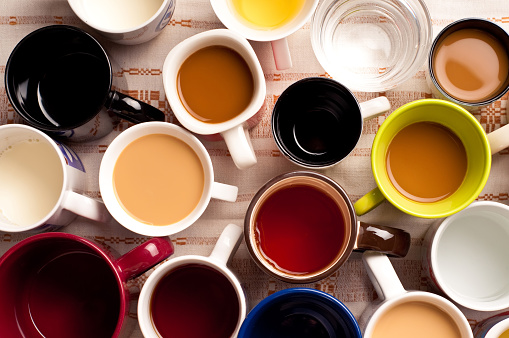

Majestic Mugz
We honor the quiet moments you spend brewing and sipping your favorite coffees or teas with beautiful high-quality ceramic, stainless steel, and glass.
Once you've made your favorite beverage, it always seems to taste better in quality ceramic mug, it's like the experience gets elevated to a higher status. That’s why we select only the highest quality handmade mugs from producers that use quality clay and glazes. Our selection of handmade coffee mugs are crafted by artisans who believe that the small details make all of the difference.
At Magestic Mugz we are committed to delighting all our customers with quality service and want to be sure every purchase is a pleasant experience. We love knowing our customers will be happy with their purchase by:
If your product does not meet your expectations just let us know we’ll make it right. We are excited to help you select the right brewers, mugs and storage containers from the highest quality artisans.
